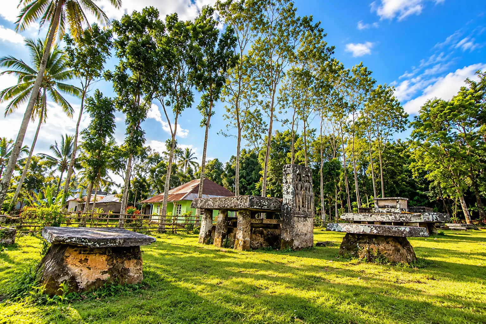
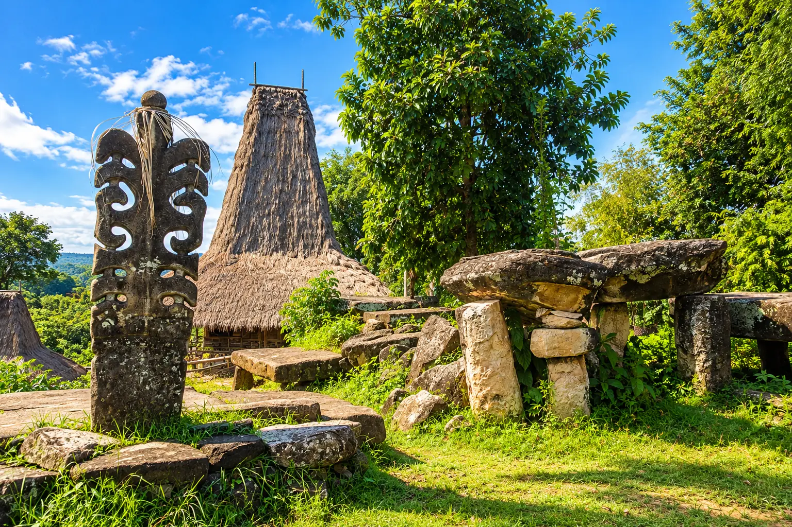
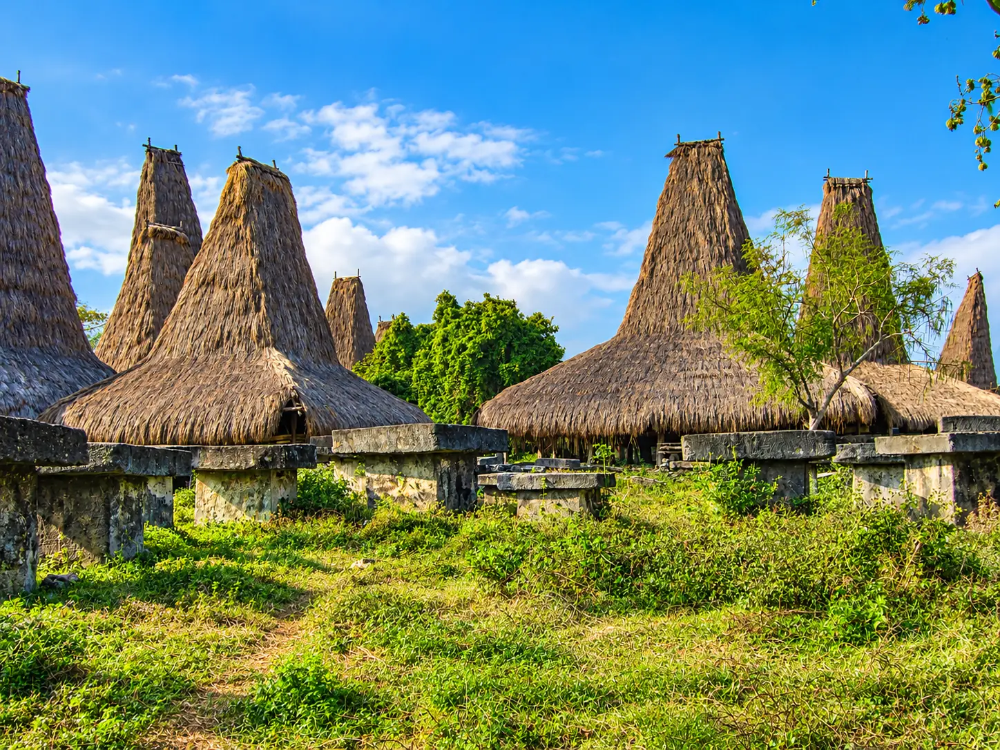
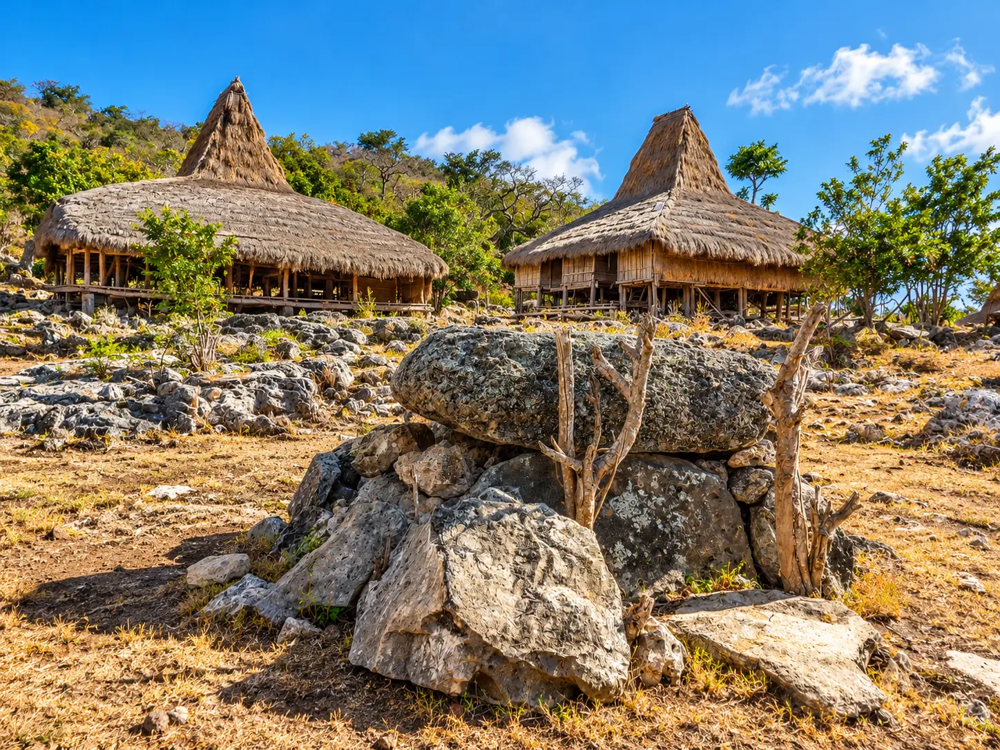
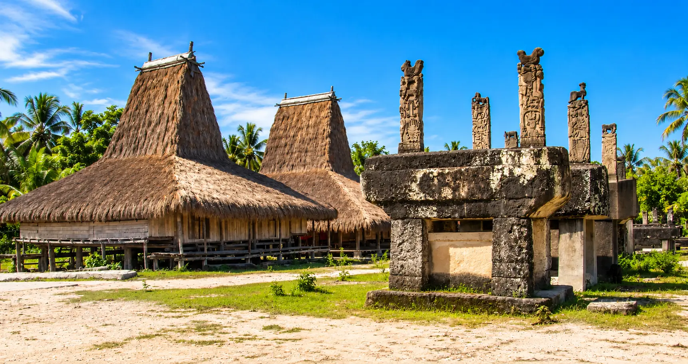
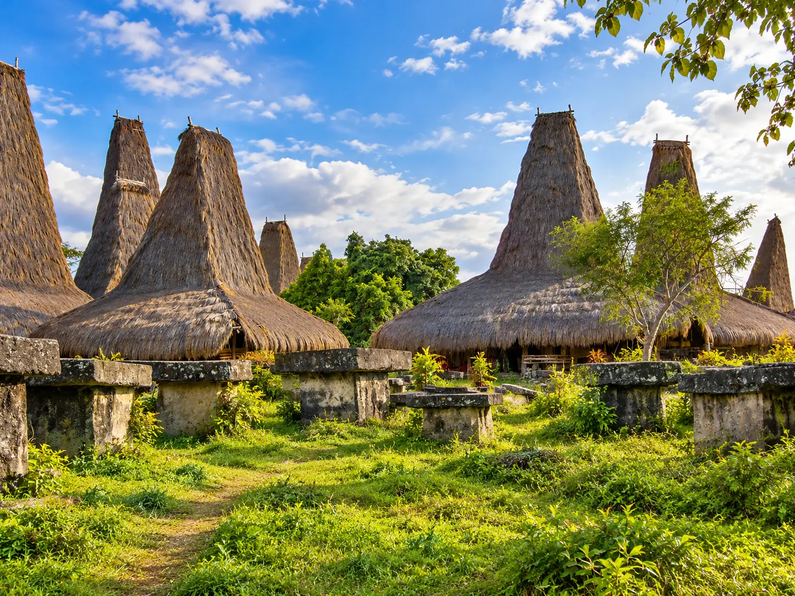

Discover Sumba · By theme
The traditional villages of Sumba
8 villages, from the oldest to the most award-winning — houses with conical roofs, megalithic tombs and ikat weaving still alive.
Discover Sumba · By theme
8 villages, from the oldest to the most award-winning — houses with conical roofs, megalithic tombs and ikat weaving still alive.
Sumba remains one of the few islands in Indonesia where traditional villages are still actually inhabited, not recreated for visitors. Here are the 13 that we recommend, classified by area, with what makes each one unique.

West
The oldest village on the island, roofs up to 15m.

West
Winner of the ASEAN Sustainable Tourism Award 2026.

West
Marapu Ceremonial Capital of the West.

Center
Sometimes hosts the Pasola, legendary treasure stone.

Center
Legendary origin of Pasola, Bijalungu Hiu Paana festival.

Center
Royal tombs, collective wedding festival.

South
Royal tombs, ikat weaving among the most famous.

East
Built to escape slave traders, wood sculpture.
.JPG)
West
Descendants of Mount Yawila, a village that is still little visited.

Center
Traditional houses all actually inhabited.

West
Built directly on the cliff face.

West — Kodi
The village where the date of Pasola is set each year.

South
Ikat dyeing demonstrations, label of the two doors.
Credits for new photos: Praijing — Fakhri Anindita · Waru Wora — Irfantraveller · Manola — MC Kabupaten Sumba Barat Daya / Octa Dapa Talu, InfoPublik · Watu Hadang — M. Barak / Collectie Wereldmuseum (CC BY-SA 4.0 for Praijing and Waru Wora; CC BY-SA 3.0 for Watu Hadang cropped display).